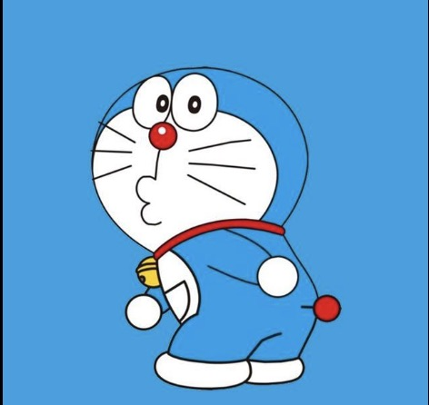

Doraemon

google
Doraemon is a blue robotic cat from the Japanese manga and anime "Doraemon." He has a magical pocket that supplies futuristic gadgets to help his friend, Nobita.
- Doraemon's cool gadgets solve problems in fun ways.
- He's always there for his friends, showing true loyalty.
- Doraemon's optimism and patience are inspiring.